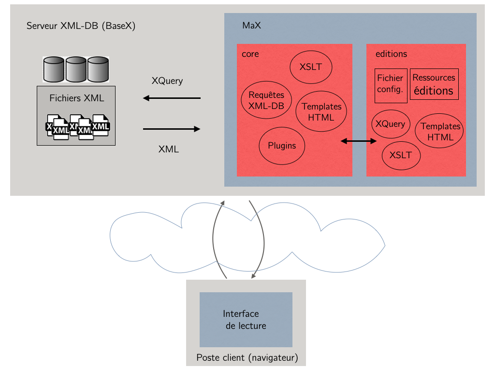
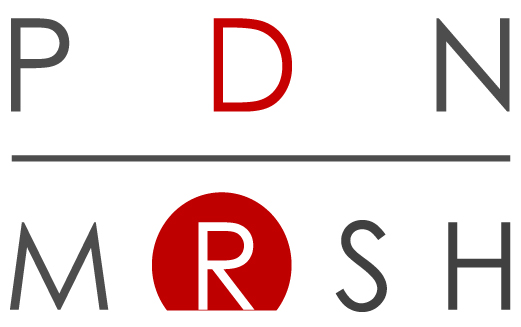

Documentation d’utilisation
MaX est régi par la licence open source CeCILL-B. Il est développé par le Certic et le pôle Document numérique.
Avant-propos
Cette documentation a été rédigée à destination :
- d’ingénieurs en analyse de sources historiques et culturelles,
- d’éditeurs de corpus numériques
par :
- des développeurs,
- des ingénieurs en analyse de sources historiques et culturelles,
- des éditeurs de corpus numériques
qui travaillent :
Introduction
Cette documentation a pour objectif d’expliquer comment déployer une instance* de MaX, comment la configurer et y ajouter de nouvelles fonctionnalités. Attention, cet outil a été développé pour être installé uniquement sur les systèmes d’exploitation Linux et mac OS.
MaX, pour Moteur d’Affichage XML, est un moteur d’affichage qui permet la consultation de fichiers XML stockés dans une base de données via un navigateur web. Il repose sur les technologies et les services suivants :
- stockage : base de données XML BaseX,
- couche métier : RestXQ / XQuery / XSLT,
- couche présentation : HTML / CSS / Javascript.

Pour afficher une page d’une édition hébergée par MaX, le cœur applicatif de MaX se base sur l’URL interrogée. Celle-ci définit le contexte de configuration de base pour l’ensemble des traitements :
- requêtage,
- transformation XSL,
- génération de pages HTML,
- exécution des plugins éventuels.
